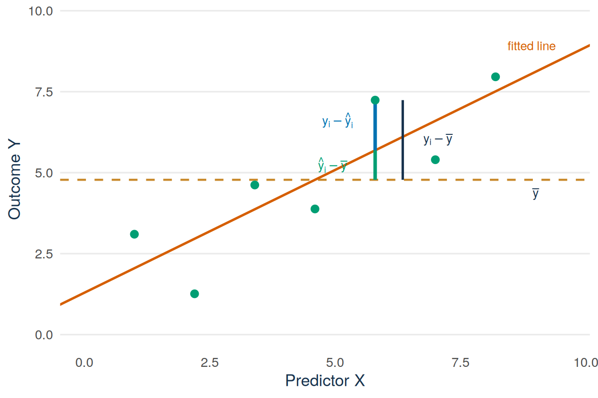

sharks <- read.csv("data/shark_tank_teaching.csv", stringsAsFactors = FALSE)
vals <- subset(sharks, deal_on_show == 1 & deal_equity_pct > 0)
vals$claimed_m <- vals$requested_valuation_usd / 1e6
vals$agreed_m <- vals$deal_valuation_usd / 1e6
val_model <- lm(agreed_m ~ claimed_m, data = vals)
summary(val_model)$coefficientsLecture 3: Coefficient inference, fit, and the F-test
By the end of Lecture 3, you can
- read a coefficient’s standard error and build its confidence interval by hand, using the correct degrees of freedom
- test a regression coefficient against zero and say what the p-value does and does not establish
- split the variation of the outcome into an explained part and a residual part
- calculate and interpret \(R^2\), and correct four common misreadings
- state and interpret the overall F-test for model usefulness
- connect the simple-regression F-test to the slope t-test
- distinguish fit, statistical evidence, prediction, and causality.
Must know
Be able to do yourself:
- read a coefficient table: standard error, t value, p-value
- build a 95% interval for a slope by hand
- calculate \(R^2\) from SST and SSE and say what it is not
- state the null hypothesis of the overall F-test.
Enough to recognise:
- the formula of adjusted \(R^2\)
- what robust standard errors fix, and what they do not fix.
Driving question
A slope is an estimate, not a fact. Before you put a number into a pitch deck or a report, you need to know how precise it is. You also need to know whether the model behind it is of any use.
The valuation slope is about 0.65. How precisely do we know that number, how much of the outcome does the line explain, and is the model useful at all?
Before class
Total preparation time: about 30 minutes.
Minimum path: the video and the R task. Full path: everything in this section.
Video preparation (10 minutes)
Watch Stanford Statistical Learning 3.2 Hypothesis Testing and Confidence Intervals. Focus on the standard error of the slope, its confidence interval, and the test against zero. The video writes RSS for the quantity this book calls SSE. All links are also listed in the External Video Guide.
Warm up: the two recipes (5 minutes). Write from memory the general recipe for a 95% confidence interval and the two-sided test of a benchmark value. Then compare your recipes with the sections for Lectures 9 and 10 of the QM Basic formula sheet. Basic Lecture 9: The t distribution and confidence intervals explains the interval, and Basic Lecture 10 explains the p-value and the test decision. This lecture applies both recipes to a regression slope.
Check your preparation
Interval: \(\text{estimate} \pm (\text{critical value}) \times \text{standard error}\), with the critical value \(t_{0.975,\,df}\) close to 1.96 for large samples. Test: \(t_{obs}=(\text{estimate}-\text{benchmark})/\text{standard error}\). Reject the benchmark if \(|t_{obs}|\) is at least the critical value \(t_{0.975,\,df}\). The p-value gives the same decision.
Classify (5 minutes). Answer the one-click Wooclap question posted on Canvas before you come to class. Three quantities measure how well a line fits. SSE is the sum of squared residuals from Lecture 1. SSR is the part of the variation in the outcome that the line explains. \(R^2\) is the share of the variation that the line explains. For a useful model, decide whether each of the three should be relatively small or relatively large. Choose your three answers before class. The lecture material defines all three quantities precisely and gives the correct answers.
Check your preparation
For a useful model, SSE should be relatively small, SSR relatively large, and \(R^2\) relatively large. Small and large here mean small or large compared with the total variation in the outcome. There are no fixed cut-off values.
R warm-up (10 minutes). Rebuild the Lecture 1 model and print its coefficient table. Bring the table to class:
Code along (bring your laptop). Bring a charged laptop with RStudio and the course project open, so that you can run the code of this chapter yourself during the lecture and get the same numbers and figures.
If you are not sure about squared terms, ratios, or the interval recipe, review Mathematics Refresher: powers, roots, and squared deviations and degrees of freedom and t critical values.
Lecture material
This section reads the coefficient table of the valuation model: the standard error, the t value, the p-value, and the confidence interval of the slope. It then measures how well the line fits, with \(R^2\), and tests whether the model is useful at all, with the F-test.
Stanford explanation (review): 3.2 Hypothesis Testing and Confidence Intervals.
Start with a founder’s question
The slope says 65 cents per claimed dollar. Would another set of deals give 50 cents, or 80? A founder who negotiates with this number wants to know how far the number can be from the true value. R and every AI assistant answer with a table of standard errors, t values, and p-values. This lecture shows how to read that table and how to check what R or an AI assistant says about it.
How precisely do we know the slope?
The code below is the warm-up code. It rebuilds the data and the model of Lecture 1: the valuation agreed on air (agreed_m) regressed on the valuation claimed by the founder (claimed_m), both in $ millions, for the 874 Shark Tank deals for a share of the company. It then prints the coefficient table.
sharks <- read.csv("data/shark_tank_teaching.csv", stringsAsFactors = FALSE)
vals <- subset(sharks, deal_on_show == 1 & deal_equity_pct > 0)
vals$claimed_m <- vals$requested_valuation_usd / 1e6
vals$agreed_m <- vals$deal_valuation_usd / 1e6
val_model <- lm(agreed_m ~ claimed_m, data = vals)
summary(val_model)$coefficients Estimate Std. Error t value Pr(>|t|)
(Intercept) -0.06798986 0.06847892 -0.9928582 3.210545e-01
claimed_m 0.64874084 0.01106883 58.6096854 1.099793e-304Lecture 1 read only the first column, the estimates. The other three columns, and the interval that R calculates from them, complete the five quantities from QM Basic that Lecture 1 reviewed. These quantities work here in the same way as in QM Basic. The only new element is the quantity that is estimated: a slope.
| Quantity | Where you find it | For the valuation slope |
|---|---|---|
| estimate | Estimate column |
\(\hat\beta_1 = 0.649\) |
| standard error | Std. Error column |
\(\operatorname{SE}(\hat\beta_1) = 0.0111\) |
| t value | t value column |
\(t = 58.6\) |
| p-value | Pr(>|t|) column |
\(< 0.001\) |
| confidence interval | confint() |
computed below |
The file contains all 874 deals for a share of the company. So these deals are not a sample drawn from the file. We treat them as one possible result of the show. Other pitches would have given a slightly different line. The standard error says how much the estimated slope \(\hat\beta_1\) would vary from one such set of deals to the next.
Definition
Standard error of a coefficient, \(\operatorname{SE}(\hat\beta_1)\). An estimate of how much the estimated coefficient would vary from sample to sample. It has the units of the coefficient.
Here the standard error is 0.0111, in the units of the slope: $ million agreed per $ million claimed. It is small compared with the slope, about 2% of 0.649. This standard error is correct only under the model assumptions of Lecture 2.
Degrees of freedom. The critical value (multiplier) of the interval comes from a t distribution with \(n - 2 = 874 - 2 = 872\) degrees of freedom. We subtract 2 because we must estimate two coefficients, the intercept and the slope, before we can estimate the spread of the residuals. With \(k\) slopes and an intercept, the residual degrees of freedom are \(n - k - 1\). You need this general form from Lecture 4 onwards. We write the critical value for a 95% interval as \(t_{0.975,\,872}\). 97.5% of a t distribution with 872 degrees of freedom lies below this value, and 2.5% lies above it. In R you calculate it with qt(0.975, df):
qt(0.975, df = df.residual(val_model))[1] 1.962688With 872 degrees of freedom the critical value is 1.963, almost the same as the 1.96 of the normal distribution.
Definition
95% confidence interval for a slope. \(\hat\beta_1 \pm t_{0.975,\,n-2}\,\operatorname{SE}(\hat\beta_1)\). It is the range of values of the population slope \(\beta_1\) that the data are consistent with, under the model assumptions. In large samples the critical value is close to 1.96.
Example 19.1 (Worked example: the slope interval by hand) All numbers come from the coefficient table. Take the estimate and the standard error with one digit more than in the table above, so that rounding does not change the result: \(\hat\beta_1 = 0.6487\) and \(\operatorname{SE}(\hat\beta_1) = 0.01107\). The critical value is qt(0.975, 872) = 1.963.
\[ \hat\beta_1 \pm t_{0.975,\,872}\,\operatorname{SE}(\hat\beta_1) = 0.6487 \pm 1.963 \times 0.01107 = 0.6487 \pm 0.0217 = (0.627,\; 0.670). \]
In words: under the model assumptions, the data are consistent with a population slope between about 63 and 67 cents of agreed valuation per dollar of claimed valuation. A slope of 1, which would mean that the sharks accept the claimed valuation, is far outside this range. The endpoints of the interval have the units of the slope. The estimate, its standard error, and the interval have the same units. The t value and the p-value have no units.
R agrees:
confint(val_model) 2.5 % 97.5 %
(Intercept) -0.2023926 0.06641292
claimed_m 0.6270162 0.67046551The interval describes only the variation from sample to sample, under the model assumptions. It does not include other sources of doubt. For example, the data contain only televised pitches, we analyse only pitches with a deal, and the way the valuations are measured may matter. No formula makes an interval wider when the study design is weak.
The t-test against zero
The standard test asks whether the data are consistent with no linear association between \(X\) and \(Y\), that is, with a population slope of zero. The test is two-sided:
\[ H_0:\beta_1=0 \qquad\text{versus}\qquad H_1:\beta_1\ne0, \qquad t=\frac{\hat\beta_1-0}{\operatorname{SE}(\hat\beta_1)}. \]
By hand: \(t_{obs} = 0.6487 / 0.01107 \approx 58.6\). The estimate lies about 59 standard errors away from zero.
Decision with the critical value: reject \(H_0\) if \(|t_{obs}|\ge t_{0.975,\,872}=1.963\). Here \(58.6\ge1.963\), so we reject \(H_0\) at the 5% level. The p-value below gives the same decision in a second way. The p-value is the probability of a t value at least this far from zero in either direction, if the population slope is zero. The code below calculates it as in QM Basic:
coef_table <- summary(val_model)$coefficients
b1 <- coef_table["claimed_m", "Estimate"]
se_b1 <- coef_table["claimed_m", "Std. Error"]
t_value <- b1 / se_b1
p_value <- 2 * pt(-abs(t_value), df = df.residual(val_model))
c(estimate = b1, standard_error = se_b1,
t_statistic = t_value, p_value = p_value) estimate standard_error t_statistic p_value
6.487408e-01 1.106883e-02 5.860969e+01 1.099793e-304 What the tiny p-value does say: if the population slope were zero and the model assumptions held, a sample slope this far from zero would practically never occur. This is strong evidence against a zero slope among these deals.
What it does not say:
- It does not say that the model is correct. The fan and the influential deals of Lecture 2 limit how much you can trust every number in this table.
- It does not say that the association is large or important. With 874 observations, even a very small slope can have a tiny p-value.
- It does not say that claiming more causes a higher agreed valuation. No test can turn observed deals into an experiment.
Check: the p-value is 1×10-304. Is this slope therefore trustworthy?
No. The p-value measures the distance from zero in standard errors. R calculated the standard error under the model assumptions. Two of these assumptions are constant error variance and independent rows. Lecture 2 showed the fan in the residuals and the few deals that strongly affect the fit, so this standard error is doubtful. “Significant” means that the data are not consistent with a zero slope. It does not mean that 0.0111 is the right standard error.
The box below collects the interval and the test for one coefficient in the order that the exam asks for them.
Exam procedure: a test and an interval for a coefficient
The interval for \(\beta_j\), in five parts.
- Formula. \(\hat\beta_j\pm t_{0.975,\,df}\,\operatorname{SE}(\hat\beta_j)\), with \(df=n-k-1\) for a model with \(k\) slopes (\(df=n-2\) in simple regression).
- Given values. \(\hat\beta_j\) and \(\operatorname{SE}(\hat\beta_j)\) from the coefficient table, \(df\), and the critical value \(t_{0.975,\,df}\) from
qt(0.975, df)or from the question. - Calculations. The margin of error: critical value \(\times\) standard error.
- Interval. \((\hat\beta_j-\text{margin},\ \hat\beta_j+\text{margin})\), with the unit of the coefficient.
- Conclusion. One sentence in the words of the question. If 0 lies outside the interval, you can conclude at the 5% level that \(\beta_j\) differs from 0, and the interval shows on which side. If 0 lies inside, you cannot conclude that \(\beta_j\) differs from 0.
The test of \(H_0:\beta_j=0\), in five steps.
- Hypotheses. \(H_0:\beta_j=0\) versus \(H_1:\beta_j\ne0\). Say in words what \(\beta_j\) is. State the significance level, here 5%.
- Test statistic. \(T=\hat\beta_j/\operatorname{SE}(\hat\beta_j)\), which has the \(t\) distribution with \(df=n-k-1\) if \(H_0\) is true and the model assumptions hold.
- Critical value and rejection region. \(t_{0.975,\,df}\) from
qt(0.975, df)or from the question. Reject \(H_0\) if \(|t_{obs}|\ge t_{0.975,\,df}\). - Observed value. \(t_{obs}=\hat\beta_j/\operatorname{SE}(\hat\beta_j)\), the
t valuecolumn of the output. - Conclusion. Say whether \(t_{obs}\) lies in the rejection region. Write “reject \(H_0\)” or “do not reject \(H_0\)”, never “accept \(H_0\)”. Then write one sentence in the words of the question. If you reject, add the direction from the sign of \(\hat\beta_j\).
The p-value, when the question asks for it, comes after step 5. It is the Pr(>|t|) column. It gives the same decision: \(p\le0.05\) exactly when \(|t_{obs}|\ge t_{0.975,\,df}\).
In the exam, write the formula before the numbers, and give the parts of the interval and the steps of the test in this order.
Decomposing variation
The second part of the driving question asks how much the line explains. To answer it, we need a point of comparison. Without a predictor, the best single prediction for every deal is the mean agreed valuation \(\bar y\). A regression is useful when its fitted values \(\widehat y_i\) come closer to the observed values than this one mean does. The closer they come, the more useful the regression is.
For each observation, the distance from the mean \(\bar y\) to the observed value \(y_i\) is its total deviation. It splits exactly into two parts. The part explained by the line runs from the mean to the fitted value \(\widehat y_i\). The residual runs from the fitted value to the observed value.
\[ \underbrace{y_i-\bar y}_{\text{total (navy)}} = \underbrace{(\widehat y_i-\bar y)}_{\text{explained by the line (green)}} + \underbrace{(y_i-\widehat y_i)}_{\text{residual (blue)}}. \]
Figure 19.1 shows the split for one observation of an invented example. On the left, the green bar (explained by the line) and the blue bar (residual) are stacked. On the right, the navy bracket (total) has the same height as the two bars together.
See the R code for this figure
library(ggplot2)
# Invented data: eight points, the sixth one is highlighted
x_d <- c(1, 2, 3, 4, 5, 7, 8.6, 9.6)
y_d <- c(2.0, 1.7, 3.3, 3.0, 4.0, 8.3, 7.1, 8.0)
fit_d <- lm(y_d ~ x_d)
decomp_df <- data.frame(x = x_d, y = y_d)
i <- 6
xh <- x_d[i] # x of the highlighted observation
yh <- y_d[i] # its observed value
fh <- unname(fitted(fit_d)[i]) # its fitted value
mh <- mean(y_d) # the mean of Y
x_parts <- xh - 2.6 # where the two stacked parts are drawn
x_total <- xh + 0.7 # where the total is drawn
cap <- 0.12 # half-width of the bracket ends
ggplot(decomp_df, aes(x = x, y = y)) +
geom_hline(yintercept = mh, colour = "#C98B2E",
linetype = "dashed", linewidth = 0.8) +
geom_abline(intercept = coef(fit_d)[1], slope = coef(fit_d)[2],
colour = "#D55E00", linewidth = 0.9) +
# dotted guides at the fitted value and at the observed value
annotate("segment", x = x_parts, xend = x_total, y = fh, yend = fh,
colour = "#5B6976", linetype = "dotted", linewidth = 0.6) +
annotate("segment", x = x_parts, xend = x_total, y = yh, yend = yh,
colour = "#5B6976", linetype = "dotted", linewidth = 0.6) +
# the two stacked parts, left of the observation
annotate("segment", x = x_parts, xend = x_parts, y = mh, yend = fh,
colour = "#009E73", linewidth = 2.2) +
annotate("segment", x = x_parts, xend = x_parts, y = fh, yend = yh,
colour = "#0072B2", linewidth = 2.2) +
# the total, right of the observation, drawn as a bracket
annotate("segment", x = x_total, xend = x_total, y = mh, yend = yh,
colour = "#17324D", linewidth = 1.1) +
annotate("segment", x = x_total - cap, xend = x_total + cap,
y = c(mh, yh), yend = c(mh, yh),
colour = "#17324D", linewidth = 1.1) +
# the other observations, the fitted value, and the observed value
geom_point(data = decomp_df[-i, ], size = 2.6, colour = "grey75") +
annotate("point", x = xh, y = fh, shape = 21, size = 3.2, stroke = 1.2,
colour = "#17324D", fill = "white") +
annotate("point", x = xh, y = yh, size = 3.6, colour = "#17324D") +
annotate("text", x = xh, y = yh + 0.55,
label = "y[i]*' (observed)'", parse = TRUE,
colour = "#17324D", size = 4.2) +
annotate("text", x = xh - 0.2, y = fh + 0.38,
label = "hat(y)[i]*' (on the line)'", parse = TRUE,
hjust = 1, colour = "#17324D", size = 4.2) +
annotate("text", x = x_parts - 0.25, y = (mh + fh) / 2,
label = "'explained by the line: '*hat(y)[i] - bar(y)",
parse = TRUE, hjust = 1, colour = "#009E73", size = 4.2) +
annotate("text", x = x_parts - 0.25, y = (fh + yh) / 2,
label = "'residual: '*y[i] - hat(y)[i]",
parse = TRUE, hjust = 1, colour = "#0072B2", size = 4.2) +
annotate("text", x = x_total + 0.3, y = (mh + fh) / 2,
label = "'total: '*y[i] - bar(y)",
parse = TRUE, hjust = 0, colour = "#17324D", size = 4.2) +
annotate("text", x = 11.9, y = mh - 0.38,
label = "bar(y)*' (mean of Y)'", parse = TRUE,
hjust = 1, colour = "#17324D", size = 4.2) +
annotate("text", x = 2.5, y = 1.2, label = "fitted line",
hjust = 0, colour = "#D55E00", size = 4.2) +
scale_x_continuous(breaks = seq(0, 12, 2)) +
scale_y_continuous(breaks = seq(0, 10, 2)) +
coord_cartesian(xlim = c(0, 12), ylim = c(0, 10.5), expand = FALSE) +
labs(x = "Predictor X", y = "Outcome Y") +
theme_minimal(base_size = 13) +
theme(
panel.grid.minor = element_blank(),
panel.grid.major.x = element_blank(),
plot.caption = element_text(colour = "#5B6976"),
axis.title = element_text(colour = "#17324D")
)
Now square each of the three pieces and add up over all observations. This gives three sums of squares. SST is the total sum of squares, SSR is the sum of squares explained by the regression, and SSE is the sum of squared residuals from Lecture 1. For a least-squares line with an intercept, the same split holds for the sums:
\[ \underbrace{\sum_i(y_i-\bar y)^2}_{\text{SST: total}} = \underbrace{\sum_i(\widehat y_i-\bar y)^2}_{\text{SSR: explained by the line}} + \underbrace{\sum_i(y_i-\widehat y_i)^2}_{\text{SSE: residual}}. \]
The code below calculates the three sums for the valuation model and checks that SSR and SSE add up to SST:
y <- vals$agreed_m
yhat <- fitted(val_model)
mean(y) # mean agreed valuation, in $ millions[1] 2.217912SST <- sum((y - mean(y))^2)
SSR <- sum((yhat - mean(y))^2)
SSE <- sum((y - yhat)^2)
c(SST = SST, SSR = SSR, SSE = SSE, check = SSR + SSE) SST SSR SSE check
11926.367 9511.795 2414.572 11926.367 The units are squared millions of dollars, so the raw numbers (SST is about 12,000) mean little on their own. The sums of squares matter only relative to each other.
Example 19.2 (Worked example: from SST and SSE to SSR and R²) A regression output reports \(\text{SST} = 500\) and \(\text{SSE} = 125\). Find SSR and \(R^2\).
Because \(\text{SST}=\text{SSR}+\text{SSE}\), the explained part is \(\text{SSR} = \text{SST} - \text{SSE} = 500 - 125 = 375\). Then
\[ R^2 = \frac{\text{SSR}}{\text{SST}} = \frac{375}{500} = 0.75 \qquad\text{or equivalently}\qquad R^2 = 1 - \frac{\text{SSE}}{\text{SST}} = 1 - \frac{125}{500} = 0.75. \]
The fitted values explain 75% of the variation of the outcome in the sample. The other 25% remains as residual variation around the line.
R²: what 0.798 means, and four wrong readings
Definition
\(R^2\) (R squared). The share of the variation of the outcome in the sample that the fitted line explains:
\[ R^2=\frac{\text{SSR}}{\text{SST}} =1-\frac{\text{SSE}}{\text{SST}}. \]
It lies between 0 and 1.
For the valuation model:
c(
manual = 1 - SSE / SST,
from_R = summary(val_model)$r.squared,
correlation_squared = cor(vals$claimed_m, vals$agreed_m)^2
) manual from_R correlation_squared
0.7975434 0.7975434 0.7975434 Here \(R^2 \approx 0.798\). Among these deals, the linear association with the claimed valuation explains about 80% of the variation in the agreed valuations. The third number in the output shows a fact that holds in simple regression: \(R^2\) is the squared correlation of \(X\) and \(Y\), \(R^2 = r_{XY}^2\). Squaring removes the sign, so look at the slope or the correlation for the direction of the association.
People often read \(R^2\) wrongly. Below are four wrong readings of \(R^2\), each with a wrong sentence and its correction. The first two are worked out here. The last two are in the Try it task.
Not the percentage of correct predictions. Wrong: “The model predicts 80% of agreed valuations correctly.” Corrected: the model explains 80% of the variation in agreed valuations. Single predictions can still miss by millions of dollars. The standard deviation of the residuals is about $1.66 million, as the output of summary() shows later in this section.
Not proof that the assumptions hold. Wrong: “With \(R^2\) this high, the model is clearly correct.” Corrected: \(R^2\) measures fit. It does not check the assumptions. Lecture 2 found a fan in the residuals and influential deals in this same model, and the value 0.798 says nothing about either problem.
Try it: correct the last two wrong sentences
Try this with your neighbour first. Correct each sentence in one line, as above.
Sentence 3 (you). “The claim explains 80% of the valuation, so claiming more will raise your valuation.”
Sentence 4 (you). “The model will explain 80% of the differences in valuations in next year’s pitches too.”
Check your answers
Sentence 3 claims causation. \(R^2\) describes an association among observed deals. Claims were not randomly assigned, and no measure of fit says what would happen if a founder changed the claim. Sentence 4 claims that the fit holds for new data. \(R^2\) is calculated on this sample. A new season, a different selection of pitches, or a change in how the sharks negotiate can all lower \(R^2\). The fit is evidence about these 874 deals, not a guarantee for the next 874.
The overall F-test
The last part of the driving question asks whether the model is useful at all, compared with predicting the mean \(\bar y\) for every deal. The overall F-test answers this question. We state the test here for a regression with \(k\) predictors, because Lecture 4 adds more predictors. In this lecture \(k=1\).
Definition
Overall F-test. A test of the null hypothesis that all slopes of the model are zero, \(H_0:\beta_1=\cdots=\beta_k=0\), against the alternative that at least one slope is not zero. The test statistic is
\[ F=\frac{\text{SSR}/k}{\text{SSE}/(n-k-1)}. \]
A large F with a small p-value is evidence that the model explains more than the mean alone.
Read the ratio part by part. The numerator is the explained variation per predictor. The denominator is the residual variation per residual degree of freedom. If no slope differs from zero, the numerator and the denominator are of similar size and F is near 1. A large F is evidence that the predictors together help to explain the outcome.
All numbers of this lecture appear together in the output of summary(). Read it from top to bottom in this order: (1) the formula and the data, (2) the coefficient estimates and their units, (3) the standard errors, t values, and p-values, (4) the residual standard error, (5) \(R^2\) and adjusted \(R^2\), (6) the overall F-test. Then remember (7), which the output does not print: the assumptions and the limits of the data.
summary(val_model)
Call:
lm(formula = agreed_m ~ claimed_m, data = vals)
Residuals:
Min 1Q Median 3Q Max
-7.8172 -0.3968 -0.0064 0.1734 13.4461
Coefficients:
Estimate Std. Error t value Pr(>|t|)
(Intercept) -0.06799 0.06848 -0.993 0.321
claimed_m 0.64874 0.01107 58.610 <2e-16 ***
---
Signif. codes: 0 '***' 0.001 '**' 0.01 '*' 0.05 '.' 0.1 ' ' 1
Residual standard error: 1.664 on 872 degrees of freedom
Multiple R-squared: 0.7975, Adjusted R-squared: 0.7973
F-statistic: 3435 on 1 and 872 DF, p-value: < 2.2e-16Two lines of this output are new. The residual standard error, 1.664, is the standard deviation of the residuals in the units of the outcome: \(s=\sqrt{\text{SSE}/(n-2)}\), here about $1.66 million. This number is large mainly because of a few very large misses: Lecture 2 showed that half of the residuals lie between \(-0.40\) and \(0.17\). Still, it is large compared with the mean agreed valuation of $2.22 million. So single deals can lie far from the line even though \(R^2\) is high. Adjusted \(R^2\) is \(R^2\) with a small penalty for every predictor in the model, \(1-(1-R^2)(n-1)/(n-k-1)\). It is below \(R^2\), and it can even be negative when the predictors add almost nothing. Unlike \(R^2\), it can fall when you include a predictor that explains almost nothing. This property makes it the fairer number for comparing models with different numbers of predictors. With one predictor and 874 observations the two hardly differ (0.7975 and 0.7973).
The last line reports \(F \approx 3435\) on 1 and 872 degrees of freedom. The p-value is printed as < 2.2e-16, which means practically zero. The test rejects the null hypothesis: under the model assumptions, the model with the claimed valuation fits better than a model with only an intercept.
In simple regression, F and t answer the same question. With one predictor, the null hypothesis of the F-test is \(H_0:\beta_1 = 0\), the same as in the two-sided t-test of the slope, and
\[ F = t^2. \]
t_slope <- summary(val_model)$coefficients["claimed_m", "t value"]
f_model <- unname(summary(val_model)$fstatistic["value"])
c(t_squared = t_slope^2, F = f_model)t_squared F
3435.095 3435.095 Both equal about 3435. This holds only in simple regression. In multiple regression the F-test looks at several slopes together, while each t-test looks at one slope. Lecture 5 uses this difference to test several slopes at once.
Usefulness has more than one meaning
The question “Is the model useful?” has at least four different meanings. A model can be useful in one meaning and useless in another. The four examples below are invented:
- Slope clearly different from zero, low \(R^2\). A loyalty-programme analysis on 400,000 customers finds a positive association between mailings and spending. The association is precisely estimated, but it explains only 1% of the variation in spending. If the company sent the mailings at random, this result is useful for a decision about all customers. It is useless for predicting the spending of one customer.
- High \(R^2\), no causal reading. Store revenue regressed on the number of staff fits very well, because both depend on the size of the store. Hiring more staff at a small store will not produce the revenue of a big store.
- Good fit on the data used, poor prediction for new data. A travel-demand model fitted on data for 2015–2019 explained bookings very well and failed in 2020. The \(R^2\) on the data used for fitting never promised that the pattern would continue.
- Accurate predictions, no explanation. A complex prediction model may forecast weekly orders very well while its coefficients do not explain why orders change. Such a model is fine for decisions about how much stock to order, and useless for planning a price change.
Always judge a model by its goal: explanation, prediction, or support for a decision.
Robust standard errors: what they fix
Heteroskedasticity-consistent standard errors, called robust standard errors for short, do not need the constant-variance assumption. The fitted coefficients stay the ordinary least-squares values. Only the standard errors change, and with them the t values, p-values, and intervals. Lecture 2 found a fan in the residuals of this model, so robust standard errors are a sensible choice here:
library(lmtest)
library(sandwich)
coeftest(val_model, vcov. = vcovHC(val_model, type = "HC1"))
t test of coefficients:
Estimate Std. Error t value Pr(>|t|)
(Intercept) -0.067990 0.087721 -0.7751 0.4385
claimed_m 0.648741 0.033993 19.0846 <2e-16 ***
---
Signif. codes: 0 '***' 0.001 '**' 0.01 '*' 0.05 '.' 0.1 ' ' 1coefci(val_model, vcov. = vcovHC(val_model, type = "HC1")) 2.5 % 97.5 %
(Intercept) -0.2401587 0.1041790
claimed_m 0.5820233 0.7154583The function coeftest() prints the coefficient table with robust standard errors, and coefci() prints the robust 95% confidence intervals. The option type = "HC1" selects one common version of the robust formula. You do not need the other versions in this course. The robust standard error of the slope is 0.034, about three times the usual 0.0111. The robust 95% interval runs from about 0.58 to 0.72. It is three times as wide as the usual interval and still lies far below 1.
Robust standard errors fix exactly one problem: an error variance that is not constant. They do not repair a curved relationship, confounding, dependence between rows, influential data errors, or a selected sample. If the slope itself is biased, a robust standard error only says how precisely the wrong number is estimated. You do not have to calculate robust standard errors by hand. You should know what they are for.
What a precise slope and a high R² can and cannot say
- Every number of this lecture is calculated under the assumptions of Lecture 2. The fan makes the usual standard error doubtful, and a few deals strongly affect the fit.
- The data are deals on a television show, not a random sample of companies. This selection affects every estimate.
- Precision and fit are not causation.
What you can do with it: use the slope and its interval for the decision. Use the residual standard error to judge how far single cases lie from the line. Prefer robust standard errors when the residual plot shows a fan.
Answering the driving question
The slope is known precisely, the line explains much of the outcome, and the model is useful, but only under certain conditions. The slope 0.649 has standard error 0.0111. Its 95% interval \((0.627, 0.670)\) is only about four cents per claimed dollar wide. With robust standard errors it is about 13 cents wide, from 0.58 to 0.72. The t-test clearly rejects a zero slope (\(t \approx 58.6\)). The line explains about 80% of the variation in agreed valuations, and the overall F-test (\(F \approx 3435\)) confirms that the model fits better than the mean alone. All of these statements depend on the assumptions checked in Lecture 2, where the residuals showed a fan and a few influential deals.
A founder’s decision (invented example)
Your advertising slope is 0.15 orders per euro, with a standard error of 0.05. The 95% interval runs from 0.05 to 0.25: each 100 euros of advertising goes with between 5 and 25 extra orders. At 4 euros of margin per order, that is between 20 and 100 euros. Even the best case only breaks even. The decision: reduce the advertising budget. The model has an \(R^2\) of 0.20, so it predicts single weeks badly. This low \(R^2\) does not matter here. The decision depends on the slope and its interval, not on predicting next week.
Next: Tutorial 1 practises Lectures 1–3 in the format of the exam: fit a model in R, check its residuals, and report its coefficients with intervals, tests, and \(R^2\). You take the exam in TestVision, and R is available during the exam.
After class
Total practice time: about 80 minutes.
Minimum path (about 35 minutes): read the lecture material, answer the recall questions, then work for 10 minutes on the tasks that follow. Full path: all tasks below.
Read the lecture material (15 minutes)
Read the Lecture material section above from start to end. The lecture covered the main points. The text has every step, every example, and all the code, including parts that were not shown in class. Note what is still unclear and bring it to the next tutorial, or ask Tilly.
Recall questions (10 minutes)
- Why are the residual degrees of freedom \(n-2\) in simple regression?
- Which of the five quantities (estimate, standard error, t value, p-value, interval) share the slope’s units, and which are unit-free?
- What do SST, SSR, and SSE measure, and how are they related?
- Why is \(R^2\) between 0 and 1 in an OLS model with an intercept?
- What is the null hypothesis of the overall F-test, and why does \(F=t^2\) in simple regression?
- What single problem do robust standard errors address?
Check your answers
- We estimate two coefficients, the intercept and the slope, before we can measure the residual variation. This uses up two pieces of information.
- The estimate, its SE, and the interval endpoints share the slope’s units. The t statistic and p-value are unit-free.
- Total, explained (fitted), and residual sample variation in the outcome. \(\text{SST}=\text{SSR}+\text{SSE}\) for OLS with an intercept.
- SSE is non-negative and no larger than SST, so \(1-\text{SSE}/\text{SST}\) lies between 0 and 1.
- All population slope coefficients are zero. With one predictor that is the same hypothesis as the two-sided slope t-test, and \(F=t^2\).
- An error variance that is not constant, and nothing else.
Finish a half-worked example: an interval for a new row (15 minutes)
Re-read the worked slope interval (Example 19.1). Then build the interval for the intercept row of the same table.
Step 1 (given). From the coefficient table: estimate \(-0.068\), standard error \(0.0685\), degrees of freedom \(872\), critical value qt(0.975, 872) = 1.963.
Step 2 (you). Compute the 95% interval.
Step 3 (you). Interpret it in one sentence, and say why this interval is of little use for a business decision (see the intercept in Lecture 1).
Check your answer
\(-0.068 \pm 1.963 \times 0.0685 = -0.068 \pm 0.134 = (-0.202,\; 0.066)\), in $ millions, which matches R. Under the model assumptions, the data are consistent with a population intercept between about \(-\$202{,}000\) and $66,000. The interval includes zero, so the line may pass through the origin (the point where both valuations are zero). But the intercept is the fitted mean at a claimed valuation of zero, outside the observed range of claims. The interval is calculated correctly, but it tells a founder little.
Then do four more tasks. These tasks have no given steps:
- An invented study reports a coefficient of 2.40 with standard error 0.80 and 200 residual degrees of freedom. Compute the t statistic, decide the 5% two-sided test against zero, and give the 95% interval.
- Interpret \(R^2=0.20\) without calling the model “80% wrong.”
- A model has \(k=3\), \(n=104\), SSR = 300, and SSE = 500. Calculate \(R^2\) and F.
- Explain why adding a predictor to a least-squares model cannot increase its SSE.
Check your answers
- \(t_{obs} = 2.40/0.80 = 3\). The critical value is \(t_{0.975,\,200}\) =
qt(0.975, 200)= 1.972. Since \(3\ge1.972\), reject \(H_0\) at 5%. Interval: \(2.40 \pm 1.972 \times 0.80 = 2.40 \pm 1.58 = (0.82,\; 3.98)\). - The fitted values explain 20% of the variation of the outcome in the sample. 80% remains as residual variation around the fitted line. Nothing is “wrong”. The fitted values are simply far from many single outcomes.
- \(\text{SST}=300+500=800\), so \(R^2=300/800=0.375\). \(F=(300/3)/(500/(104-3-1))=100/5=20\).
- The larger model can reproduce the old fit by setting the new slope to zero. Least squares picks the smallest SSE, so the SSE of the larger model cannot be above the old one.
Practice: all steps on equity and season (20 minutes)
Fit equity_offered_pct ~ season on all 1,441 pitches. Report the slope’s 95% confidence interval, the t-test against zero, \(R^2\), and the overall F-test. Then write a conclusion of 120 words that separates estimate, uncertainty, fit, and scope.
Check a model answer
sharks <- read.csv("data/shark_tank_teaching.csv", stringsAsFactors = FALSE)
equity_model <- lm(equity_offered_pct ~ season, data = sharks)
summary(equity_model)$coefficients Estimate Std. Error t value Pr(>|t|)
(Intercept) 20.4565874 0.46442667 44.04697 4.922706e-269
season -0.8241241 0.04752298 -17.34159 2.514546e-61confint(equity_model) 2.5 % 97.5 %
(Intercept) 19.5455616 21.3676132
season -0.9173458 -0.7309023c(r_squared = summary(equity_model)$r.squared,
F = unname(summary(equity_model)$fstatistic["value"])) r_squared F
0.1728605 300.7308055 A complete conclusion has four parts. Estimate: one later season (season) is associated with about 0.824 percentage points less equity offered (equity_offered_pct), with standard error 0.048. Uncertainty: the 95% interval \((-0.917, -0.731)\) excludes zero, and the t-test rejects a zero slope (\(t\approx-17.3\), p \(<\) 0.001). Fit: the season explains about 17.3% of the variation in the equity offered, and the overall F-test (\(F\approx300.7 = t^2\)) rejects the model with only an intercept. Scope: this is a trend over time among recorded pitches, not a causal effect of the season, and the standard errors depend on the assumptions of Lecture 2.
Review: one diagnostics question from Lecture 2 (5 minutes)
The residual-versus-fitted plot of the valuation model shows unequal spread, the fan of Lecture 2. Which numbers of the coefficient table in this lecture does this pattern make most doubtful, and why?
Check your answer
The standard error 0.0111, and with it the t value, the p-value, and the confidence interval that are built from it. The usual formula for the standard error assumes one common error variance \(\sigma^2\). A fan says that the variance is not constant, so the stated precision is doubtful. Robust standard errors address exactly this one problem. They repair nothing else.
Worked exam interpretation (5 minutes)
Exam-style question. An invented example. A model regresses the weekly orders of food trucks on their number of social-media posts per week. The model is fitted on \(n = 102\) food trucks. It reports a slope of 1.20 with standard error 0.40, \(R^2 = 0.083\), and \(F = 9.0\). Build the 95% interval for the slope, decide the 5% test against zero, verify the F statistic from the t statistic, and state in one sentence what the low \(R^2\) does and does not imply.
Check a model answer
\(t_{obs} = 1.20/0.40 = 3.0\). With \(n-2 = 100\) degrees of freedom the critical value \(t_{0.975,\,100}\) = qt(0.975, 100) is 1.984, so the interval is \(1.20 \pm 1.984\times0.40 \approx (0.41,\; 1.99)\) orders per post. Since \(3.0\ge1.984\), the two-sided 5% test rejects \(H_0:\beta_1=0\). The interval excludes zero, which gives the same decision. In agreement with this, \(F = t^2 = 9.0\). The low \(R^2\) says that the number of posts explains about 8% of the variation in weekly orders, so predictions for single food trucks will be poor. It does not remove the evidence that the association is not zero.
Check the AI (5 minutes)
You asked an AI assistant: “R squared is 0.80 and the p-value is below 0.001. Is my model good?” It answered:
“Yes. The model predicts 80% of the valuations correctly, and the tiny p-value proves that the model assumptions hold.”
Find what is wrong and write the corrected answer. This task is the Verify step of Attempt → Ask → Verify → Explain, and the exam asks for this step.
Check your answer
Two errors. R squared is the share of the variation that the line explains, not a share of correct predictions. Single predictions can still miss by millions of dollars (the residual standard error is about 1.7 million). And the p-value is calculated under the assumptions. It cannot prove them. Lecture 2 showed a fan in the residuals, so the standard error behind this p-value is doubtful.
Make it yours (5 minutes)
Two sentences about your own venture
Think of your EiA3 venture, or any business you know well. Think of one regression you might run on its data. Write two sentences. First, say which you would rather have for your next decision, a precise slope (narrow interval) or a high \(R^2\), and why. Then name the meaning of “useful” from the list of four in this lecture that matters most for that decision. There is no wrong answer. Precision and fit answer different questions.
See an example, then write your own
Take a student venture that sells boxes of prepared meals on campus. “For setting next month’s advertising budget I would prefer a precise slope to a high \(R^2\). I need to know how many orders an extra €100 brings, even if orders change a lot from week to week. That is the first meaning on the list, a reliable slope with a low \(R^2\). Predicting individual weeks matters less to me than the return on an input that I control.”
You can discuss this task, and any other task in this chapter, with Tilly, the course AI assistant: ask it to invent a regression model for a business, with a significant slope and a low \(R^2\). Then let Tilly ask you what the model is still useful for.
Continue to Tutorial 1: Simple regression, diagnostics, and model usefulness.
Code sheet: Lecture 3 commands and formulas.
For a more formal treatment, see James et al., An Introduction to Statistical Learning, 2nd ed., Sections 3.1.2–3.1.3, and Nieuwenhuis, Statistical Methods for Business and Economics, Chapters 19–20.